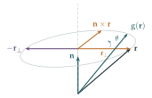

Let \(\mathbf{n}\) be a vector of unit length in three dimensions. For each vector \(\mathbf{r}\), \(\mathrm{f}(\mathbf{r})\) is defined by \(\mathrm{f}(\mathbf{r}) = \mathbf{n} \times \mathbf{r}\).
Given that \[\mathbf{n} = \begin{pmatrix} a \\ b \\ c \end{pmatrix} \quad\text{and}\quad \mathbf{r} = \begin{pmatrix} x \\ y \\ z \end{pmatrix},\] show that the \(x\)-component of \(\mathrm{f}(\mathrm{f}(\mathbf{r}))\) is \(-x(b^2 + c^2) + aby + acz\). Show further that \[\mathrm{f}(\mathrm{f}(\mathbf{r})) = (\mathbf{n}.\mathbf{r})\mathbf{n} - \mathbf{r}.\] Explain, by means of a diagram, how \(\mathrm{f}(\mathrm{f}(\mathbf{r}))\) is related to \(\mathbf{n}\) and \(\mathbf{r}\).
Let \(R\) be the point with position vector \(\mathbf{r}\) and \(P\) be the point with position vector \(\mathrm{g}(\mathbf{r})\), where \(\mathrm{g}\) is defined by \[\mathrm{g}(\mathbf{s}) = \mathbf{s} + \sin\theta\,\mathrm{f}(\mathbf{s}) + (1 - \cos\theta)\,\mathrm{f}(\mathrm{f}(\mathbf{s})).\] By considering \(\mathrm{g}(\mathbf{n})\) and \(\mathrm{g}(\mathbf{r})\) when \(\mathbf{r}\) is perpendicular to \(\mathbf{n}\), state, with justification, the geometric transformation which maps \(R\) onto \(P\).
Let \(R\) be the point with position vector \(\mathbf{r}\) and \(Q\) be the point with position vector \(\mathrm{h}(\mathbf{r})\), where \(\mathrm{h}\) is defined by \[\mathrm{h}(\mathbf{s}) = -\mathbf{s} - 2\,\mathrm{f}(\mathrm{f}(\mathbf{s})).\] State, with justification, the geometric transformation which maps \(R\) onto \(Q\).
The hook
In two dimensions, rotating a point is easy: multiply by \(e^{\mathrm{i}\theta}\). In three dimensions it is much harder. There is no single complex number to multiply by, rotations about different axes do not commute, and writing down the matrix for “rotate by \(37^\circ\) about the axis through \((1, 2, 2)\)” looks daunting.
This question builds that matrix, for any axis and any angle, out of the cross product. The result is Rodrigues’ rotation formula, published by Olinde Rodrigues in 1840. It is used every day in robotics, computer graphics and spacecraft navigation, and it reveals a lovely fact: crossing with \(\mathbf{n}\) is “rotation by \(90^\circ\) about \(\mathbf{n}\)”, and every rotation about \(\mathbf{n}\) is built from it, just as \(e^{\mathrm{i}\theta} = \cos\theta + \mathrm{i}\sin\theta\) is built from multiplication by \(\mathrm{i}\).
Before you start
What does \(\mathbf{n} \times \mathbf{r}\) look like geometrically, when \(\mathbf{r}\) is perpendicular to \(\mathbf{n}\)? And when \(\mathbf{r}\) is parallel to \(\mathbf{n}\)?
If \(\mathbf{r} \parallel \mathbf{n}\), then \(\mathbf{n} \times \mathbf{r} = \mathbf{0}\). If \(\mathbf{r} \perp \mathbf{n}\), then \(\mathbf{n} \times \mathbf{r}\) has the same length as \(\mathbf{r}\) (since \(|\mathbf{n}| = 1\) and the angle is \(90^\circ\)), is perpendicular to both, and by the right-hand rule is \(\mathbf{r}\) rotated by \(90^\circ\) anticlockwise about \(\mathbf{n}\) (looking down \(\mathbf{n}\)). So \(\mathrm{f}\) kills the component of \(\mathbf{r}\) along \(\mathbf{n}\) and rotates the perpendicular component by \(90^\circ\). That picture explains the whole question.
Working it through
Stage 1 Crossing twice
\(\mathrm{f}(\mathbf{r}) = \mathbf{n} \times \mathbf{r} = (bz - cy,\ cx - az,\ ay - bx)\). Crossing again with \(\mathbf{n} = (a, b, c)\), the \(x\)-component of \(\mathrm{f}(\mathrm{f}(\mathbf{r}))\) is \[b(ay - bx) - c(cx - az) = -x(b^2 + c^2) + aby + acz. \qed\] Since \(a^2 + b^2 + c^2 = 1\), this is \(-x(1 - a^2) + aby + acz = a(ax + by + cz) - x\), which is the \(x\)-component of \((\mathbf{n}.\mathbf{r})\mathbf{n} - \mathbf{r}\). The other components follow by symmetry, so \(\mathrm{f}(\mathrm{f}(\mathbf{r})) = (\mathbf{n}.\mathbf{r})\mathbf{n} - \mathbf{r}\).■
Write \(\mathbf{r} = \mathbf{r}_\parallel + \mathbf{r}_\perp\), where \(\mathbf{r}_\parallel = (\mathbf{n}.\mathbf{r})\mathbf{n}\) is the component along \(\mathbf{n}\). What is \(\mathrm{f}(\mathrm{f}(\mathbf{r}))\) in terms of these?
\(\mathrm{f}(\mathrm{f}(\mathbf{r})) = \mathbf{r}_\parallel - \mathbf{r} = -\mathbf{r}_\perp\). Applying \(\mathrm{f}\) twice kills the parallel part and rotates the perpendicular part by \(180^\circ\) about \(\mathbf{n}\), which simply reverses it (Figure 7.5.1). This is the analogue of \(\mathrm{i}^2 = -1\).
Stage 2 The rotation
Compute \(\mathrm{g}(\mathbf{n})\). Then compute \(\mathrm{g}(\mathbf{r})\) for \(\mathbf{r} \perp \mathbf{n}\), using \(\mathrm{f}(\mathrm{f}(\mathbf{r})) = -\mathbf{r}\) for such \(\mathbf{r}\).
\(\mathrm{f}(\mathbf{n}) = \mathbf{n} \times \mathbf{n} = \mathbf{0}\), so \(\mathrm{g}(\mathbf{n}) = \mathbf{n}\): the axis is fixed. If \(\mathbf{r} \perp \mathbf{n}\), then \(\mathrm{f}(\mathrm{f}(\mathbf{r})) = -\mathbf{r}\) and \[\mathrm{g}(\mathbf{r}) = \mathbf{r} + \sin\theta\,(\mathbf{n} \times \mathbf{r}) - (1 - \cos\theta)\mathbf{r} = \cos\theta\,\mathbf{r} + \sin\theta\,(\mathbf{n} \times \mathbf{r}).\] Since \(\mathbf{n} \times \mathbf{r}\) is \(\mathbf{r}\) turned through \(90^\circ\) about \(\mathbf{n}\), with the same length, this is \(\mathbf{r}\) rotated through \(\theta\) about \(\mathbf{n}\), exactly like \((\cos\theta + \mathrm{i}\sin\theta)z\) in the plane. Since \(\mathrm{g}\) is linear and every vector is a sum of a multiple of \(\mathbf{n}\) and a vector perpendicular to \(\mathbf{n}\), \(\mathrm{g}\) is the rotation through angle \(\theta\) about the axis through the origin in the direction \(\mathbf{n}\) (anticlockwise when viewed from the tip of \(\mathbf{n}\)).■

Stage 3 The reflection
Simplify \(\mathrm{h}(\mathbf{s}) = -\mathbf{s} - 2\mathrm{f}(\mathrm{f}(\mathbf{s}))\) using part (i). What does it do to vectors along \(\mathbf{n}\), and to vectors perpendicular to \(\mathbf{n}\)?
\(\mathrm{h}(\mathbf{s}) = -\mathbf{s} - 2\bigl((\mathbf{n}.\mathbf{s})\mathbf{n} - \mathbf{s}\bigr) = \mathbf{s} - 2(\mathbf{n}.\mathbf{s})\mathbf{n}\). Vectors perpendicular to \(\mathbf{n}\) are unchanged, and \(\mathrm{h}(\mathbf{n}) = -\mathbf{n}\). So \(\mathrm{h}\) is the reflection in the plane through the origin perpendicular to \(\mathbf{n}\).■
Looking back
Decompose into parallel and perpendicular parts. Every step became clear once \(\mathbf{r}\) was split into its components along and across \(\mathbf{n}\).
Linearity reduces the work. To identify a linear map, it is enough to know what it does to a few well-chosen vectors.
An analogue of complex numbers. On vectors perpendicular to \(\mathbf{n}\), \(\mathrm{f}\) behaves like multiplication by \(\mathrm{i}\): \(\mathrm{f}^2 = -1\), and \(\mathrm{g} = \cos\theta + \sin\theta\,\mathrm{f}\).
What’s really going on
Every rotation of three-dimensional space that fixes the origin is a rotation about some axis through the origin. Euler proved this in 1775. In matrix terms, every \(3 \times 3\) rotation matrix has an eigenvector with eigenvalue \(1\), the axis. Rodrigues’ formula gives the converse: for every axis \(\mathbf{n}\) and angle \(\theta\), the rotation matrix is \[\mathbf{R} = \mathbf{I} + \sin\theta\,\mathbf{K} + (1 - \cos\theta)\,\mathbf{K}^2, \qquad \mathbf{K} = \begin{pmatrix} 0 & -c & b \\ c & 0 & -a \\ -b & a & 0 \end{pmatrix},\] where \(\mathbf{K}\) is the matrix of \(\mathbf{r} \mapsto \mathbf{n} \times \mathbf{r}\). Since \(\mathbf{K}^3 = -\mathbf{K}\), the exponential series \(e^{\theta\mathbf{K}} = \mathbf{I} + \theta\mathbf{K} + \frac{\theta^2}{2!}\mathbf{K}^2 + \cdots\) collapses to exactly this formula, the three-dimensional version of \(e^{\mathrm{i}\theta} = \cos\theta + \mathrm{i}\sin\theta\). This connection between rotations and exponentials of “infinitesimal rotations” \(\mathbf{K}\) is the starting point of the theory of Lie groups.
Rotations do not commute
Hold a book flat, rotate it \(90^\circ\) about a vertical axis and then \(90^\circ\) about a horizontal axis; then start again and do the two rotations in the other order. The book ends up in different positions. Composition of rotations in three dimensions is not commutative, unlike in two dimensions. This is one reason the quaternions of Section 6.7 are useful: the rotation by \(\theta\) about \(\mathbf{n}\) corresponds to the quaternion \(\cos\frac\theta2 + \sin\frac\theta2(a\mathrm{i} + b\mathrm{j} + c\mathrm{k})\), and composing rotations is multiplying quaternions, with the non-commutativity built in. Rodrigues himself, in his 1840 paper, found the composition formula for rotations three years before Hamilton invented quaternions.
The thinking skill
To understand a transformation, split space into pieces it treats simply: here, the axis (left alone) and the plane perpendicular to it (rotated).
This is the same idea as eigenvectors in Section 7.2: find subspaces the transformation preserves, and study it on each piece.
Try this next
Rotations in the plane. (From STEP III, 2017.) Show that rotation by \(\theta\) about the point \(a\) in the complex plane sends \(z\) to \(e^{\mathrm{i}\theta}z + a(1 - e^{\mathrm{i}\theta})\). Show that rotating by \(\theta\) about \(a\) and then by \(\phi\) about \(b\) is a rotation by \(\theta + \phi\) about some point \(c\), provided \(\theta + \phi\) is not a multiple of \(2\pi\). What is it when \(\theta + \phi = 2\pi\)?
A specific rotation. Find the matrix of the rotation by \(120^\circ\) about the axis in the direction \((1, 1, 1)\). Show that it permutes the coordinate axes cyclically.
Powers of \(\mathbf{K}\). Show that \(\mathbf{K}^2\mathbf{r} = (\mathbf{n}.\mathbf{r})\mathbf{n} - \mathbf{r}\) and \(\mathbf{K}^3 = -\mathbf{K}\), and deduce Rodrigues’ formula from the exponential series.
Two reflections make a rotation. Show that reflecting in two planes through the origin, at angle \(\alpha\) to each other, is a rotation by \(2\alpha\) about their line of intersection.
Further reading
Simon Altmann, Rotations, Quaternions, and Double Groups (Dover). The definitive account of three-dimensional rotations, including Rodrigues’ contribution.
Simon Altmann, “Hamilton, Rodrigues, and the quaternion scandal”, Mathematics Magazine 62 (1989). A short, lively history.
John Stillwell, Naive Lie Theory (Springer). Rotations, quaternions and Lie groups for undergraduates.